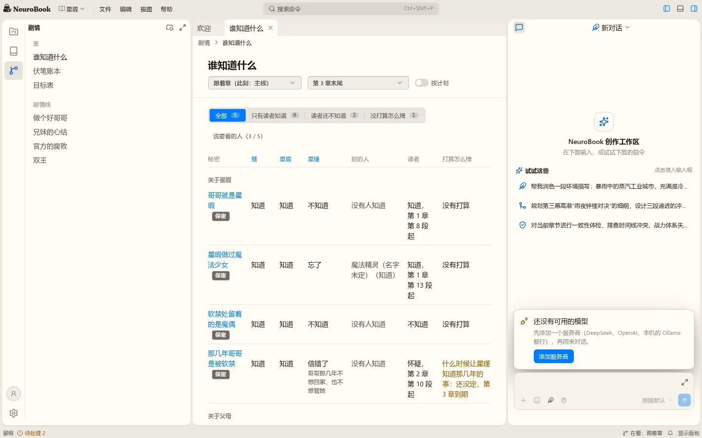
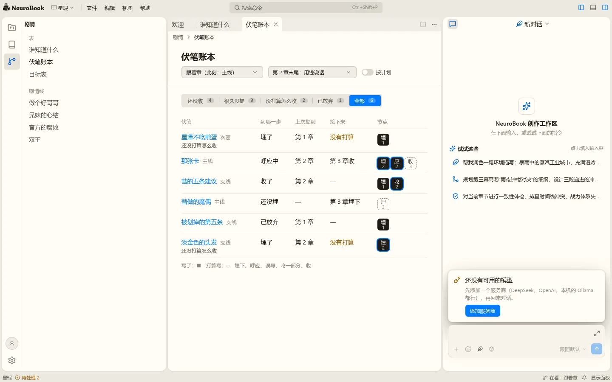
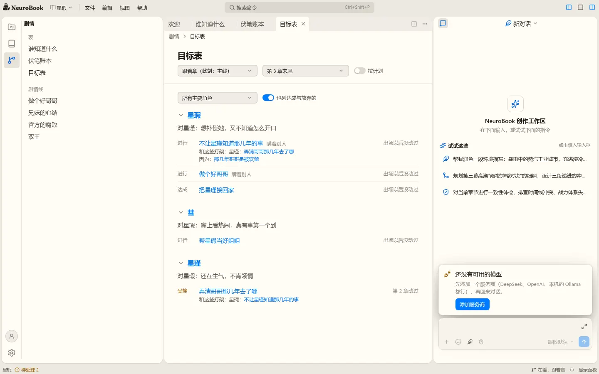
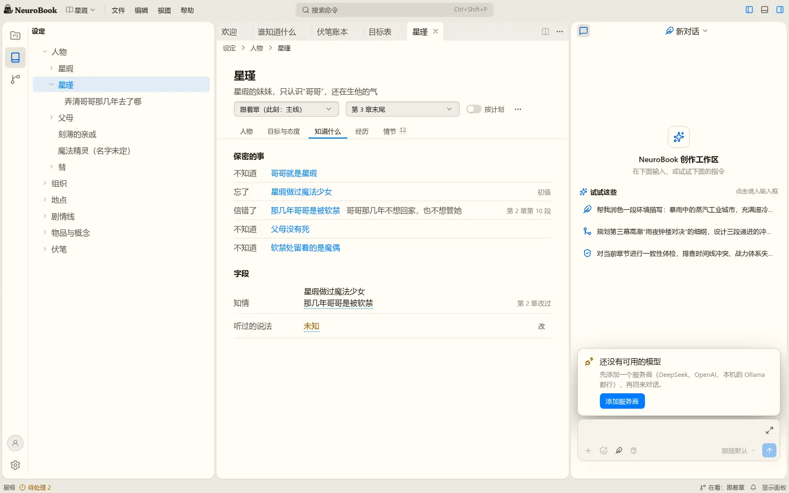
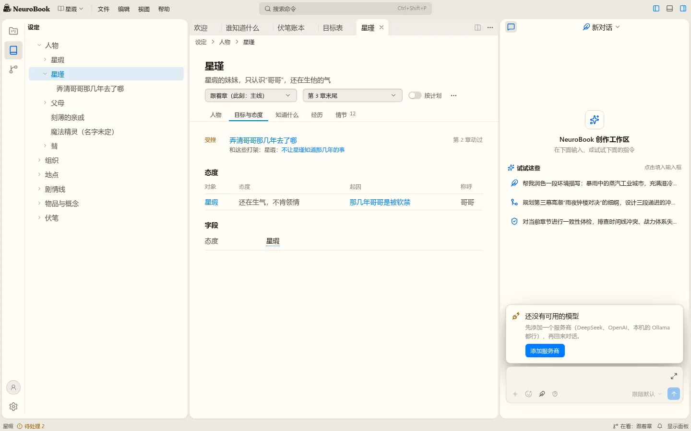
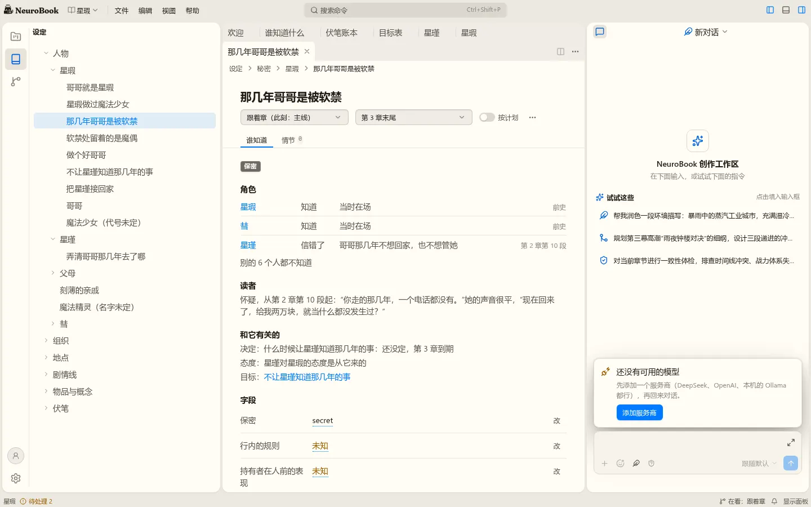
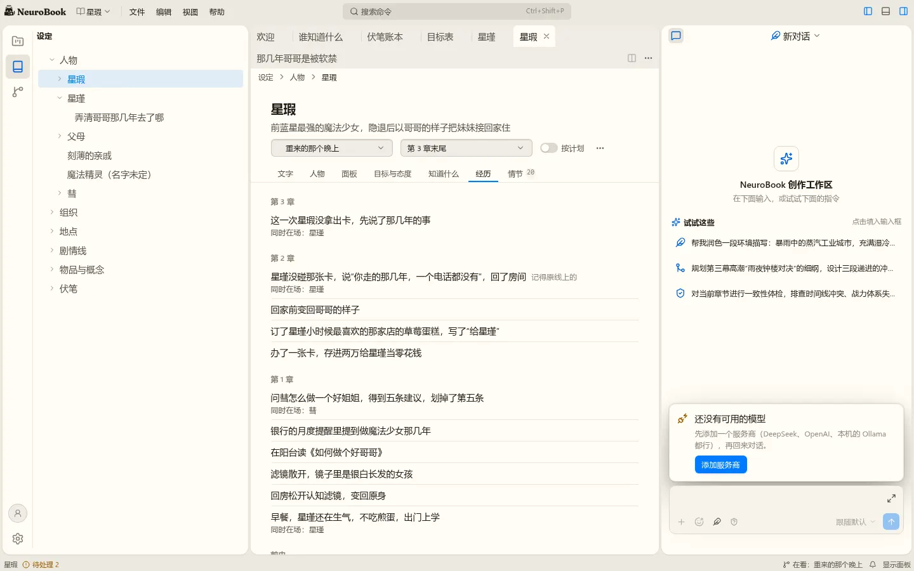
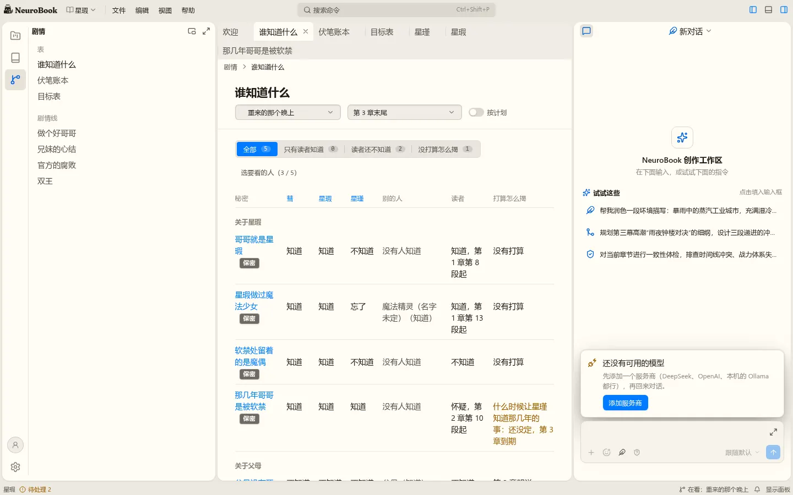
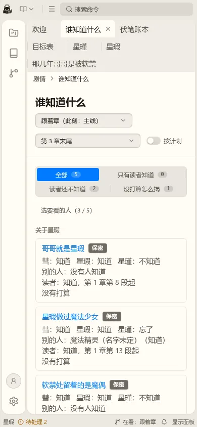
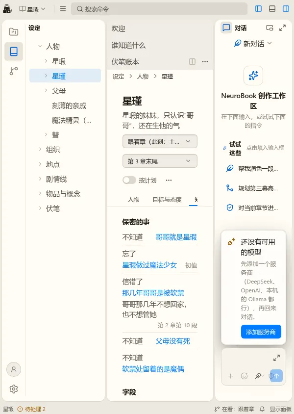

作者界面第二批第一期（剧情侧的读）：截图
w00039 t31 B2-1，2026-11-19。生产构建加 scripts/canon-sample.ts --plot 新生成的带剧情数据的星瑕样本，本机 Chrome，亮色，1440×900、600×844 与 390×844。走查期间控制台没有错误。端到端验收由 e2e/plot-author.e2e.ts 守着（Spec plot/author-ui.md 验收 1 到 6，六个场景都过）。
谁知道什么

侧栏“剧情”：三张表与样本自带的四条剧情线。表按主体分组（关于星瑕、关于父母）；缺省点名三个主要角色（持有进行或受挫目标的人）；读者一列写从第几章第几段起；挂着到期决策的那一行“打算怎么揭”用警告色。分段上写的是整张表的条数。
伏笔账本

位置选在第 2 章末尾、分段“全部”：六个伏笔各在一个阶段；“接下来”是第 3 章的计划（收、埋下），没有的写“没有打算”（警告色）；节点带只画有节点的章，打算写的是虚线框。
目标表

一组一个主要角色，组头下是态度；“瞒着别人”“和这些打架：星瑾：……”“因为：……”；星瑾的目标第 2 章受挫（动过）；打开开关多出达成的“把星瑾接回家”。
人物页：知道什么、目标与态度

“保密的事”列出所有秘密：信错了写她以为的那句与来处（第 2 章第 10 段），忘了的来处是初值，没有行的写“不知道”。下面一节“字段”是这一页的通用字段，可以看来历、可以改。

目标画法同目标表的一组；态度另成一张表（对象、态度、起因、称呼），Spec 输出 17 要的起因与称呼在目标表那一行写不下。
秘密的条目页：谁知道

顶上保密档；角色三行（彗是在前史的逃脱里在场推出的），其余 6 个人“都不知道”；读者写怀疑与第一次那一段的开头；和它有关的：到期的决策（不可点）、起因是它的态度、隐秘是它的目标。下面是通用字段：保密一行显示的是选项的原值 secret（见文末的已知限制）。
换线：回溯线“重来的那个晚上”

状态栏点“在看：跟着章”，选回溯线。星瑕的“经历”：子线第 3 章她先说了那几年的事；原线上星瑾那句话带“记得原线上的”。

同一张表在子线上：星瑾对“那几年哥哥是被软禁”从“信错了”换成“知道”。换线时页面不闪加载占位（e2e 验收 5 量着）。
窄的宽度

390 宽：表换成一行一个秘密的列表；分段筛选放不下就整段换行。这一轮顺手修了 nb-ui 分段控件的换行模式：原来各段收窄成一个字、选中的那段白字没有底色。

600 宽、两侧面板开着时编辑区只有一百多像素：页头的选择框跟着缩，知道什么里那句话换到下一行，通用字段的值换到标签下面，都不横着滚。
已知限制
- 通用字段表显示枚举字段的原值（例如保密的
secret）：组件声明里的选项只有值没有名字，表格没有可显示的名字。要么声明加选项名字，要么剧情的专门界面里不再列这一行；记为后续。
- 1440 宽时侧栏与对话面板都开着，编辑区刚过 640 像素，保密表画成表格，读者一列较挤。